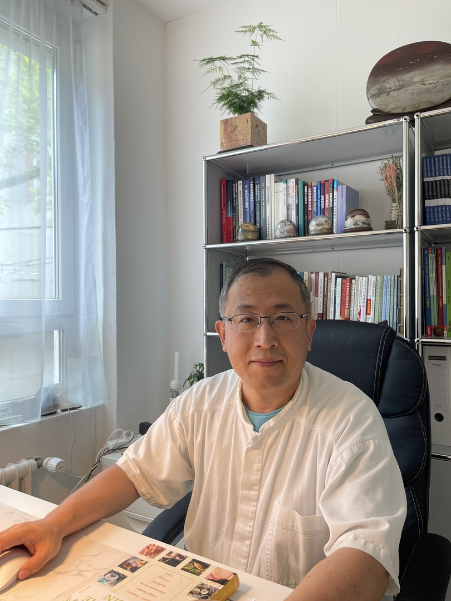

Lebenslauf
1990 – 1995
Studium an der TCM Universität Guangzhou, VR China
1995 – 2011
Arzt im TCM Spital Shandong Gaomi
2008
Weiterbildung in Beijing für Tuina-Massage
Dez 2011 – Feb 2019
Spezialist im ChinaMed Zentrum Zürich
März 2019
Gründung der TAI TCM GmbH
Sprachen
Deutsch, Englisch, Chinesisch (Mandarin & Kantonesisch)
Anerkannte Qualifikationen & Registrierungen
Spezialgebiete TCM bei folgenden Beschwerden:
- Neurologische Erkrankungen: Migräne, Kopfschmerzen, Schwindel, Tinnitus, Trigeminusneuralgie, Lähmung nach Schlaganfall, Blasenentleerungsstörung, Blasenschwäche
- Orthopädische Erkrankungen: Lumbalgie, Rückenschmerzen, Ischiasbeschwerden, Nacken-Schulter-Arm-Syndrom, Tennis-Arm, Arthritis, Arthrose, Rheuma, Achillessehnen-Symptome, Fersenschmerz
- Innere Krankheiten: Bronchitis, Harnwegsinfekte, Herzrhythmusstörungen, Bluthochdruck, Blähungen, Übelkeit, Verstopfung, Durchfall, Magenleiden, Reizdarm
- Gynäkologische Erkrankungen: Menstruationsbeschwerden, Schwangerschaftsbeschwerden, Vorbereitung auf die Geburt, Unfruchtbarkeit, Wechseljahresbeschwerden
- Psychische Erkrankungen: Depression, Schlafstörung, Burn-out-Syndrom
- Allergie/Hauterkrankungen: Heuschnupfen, Asthma, Akne, Ekzem, Neurodermitis, Psoriasis
- Sonstiges: Nikotinentwöhnung, Übergewicht, schwaches Immunsystem, unterstützende Therapie vor und nach einer Krebs-Operation